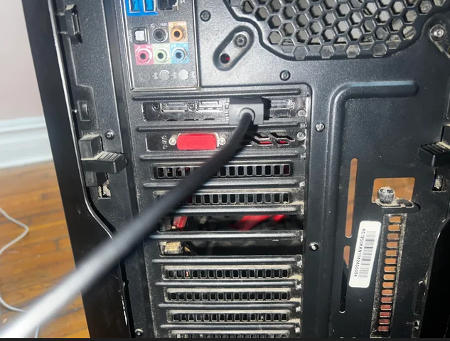
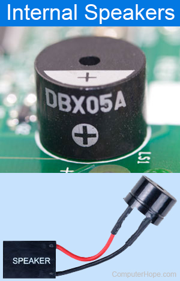
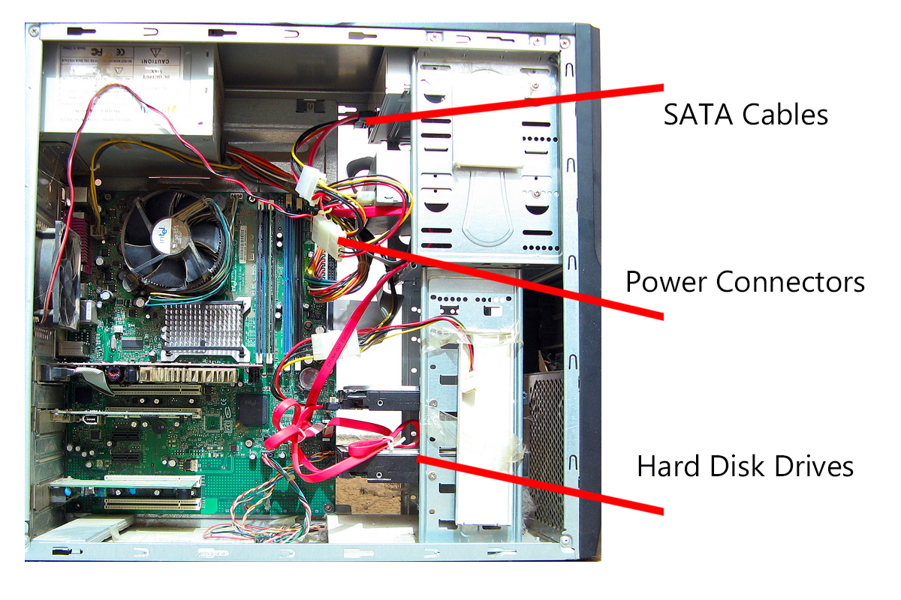
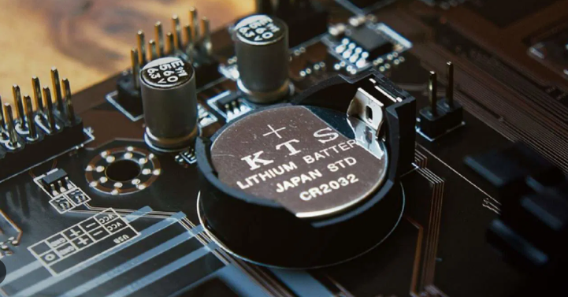
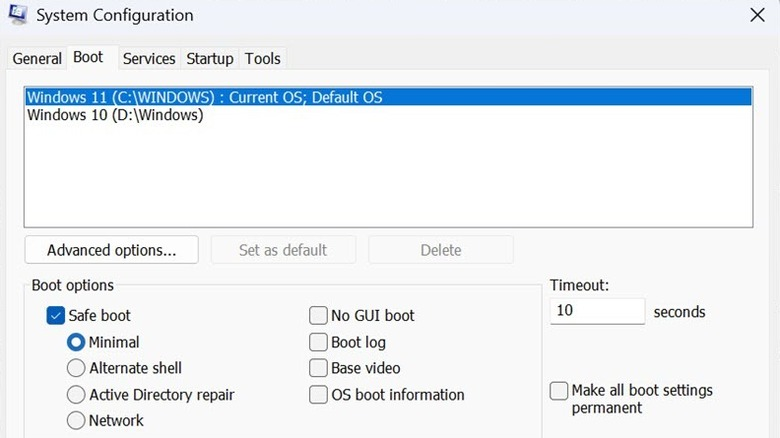

Hardware Troubleshooting Checklist
Follow these steps to identify and resolve physical hardware failures.
-
1. Power & Exterior Connections
Verify the power cable is seated firmly. Test the wall outlet with another device. Ensure monitor cables (HDMI/DisplayPort) are connected to the GPU, not the motherboard.

-
2. The "POST" Test (Beep Codes)
Listen for motherboard beeps. A single beep usually indicates a successful POST. Repeated or long beeps signify specific RAM or GPU failures.

-
3. Internal Visual Inspection
Power off and unplug the PC. Open the side panel. Check for loose RAM sticks, unplugged PCIe cables, or dust buildup in fans.

-
4. CMOS Reset
Remove the silver coin-shaped battery (CR2032) for 30 seconds, then reinsert. This resets BIOS settings to factory defaults.

-
5. Minimal Boot Configuration
Disconnect everything except the Motherboard, CPU, and one stick of RAM. If it boots, add components back one by one to find the culprit.
